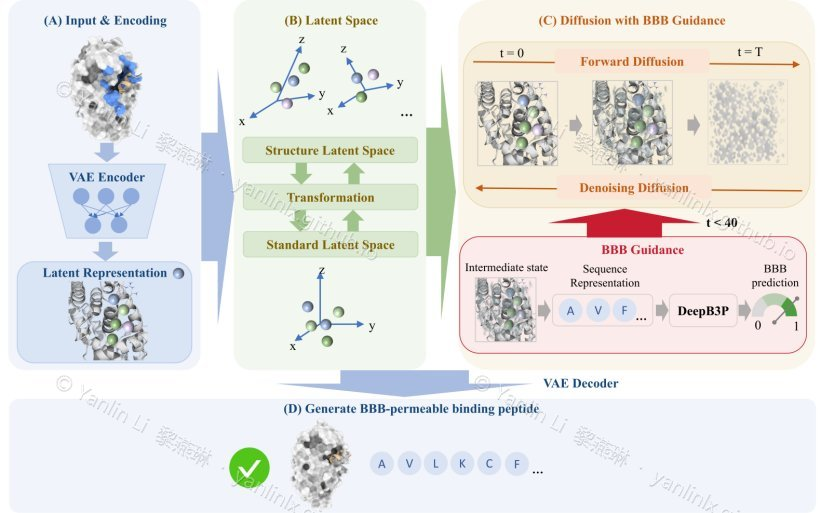

Generative peptide design with diffusion models
Feb. 2025 – Mar. 2026 · principal investigator
De novo peptide design is bottlenecked by a near-infinite sequence space, and most generated sequences never fold or bind. I extended the PepGLAD diffusion framework and built a much larger peptide–target complex training set to broaden its reach, then wired an external property predictor (solubility, stability) in as a constraint so generation is steered toward sequences likely to work as drugs — not just look plausible.